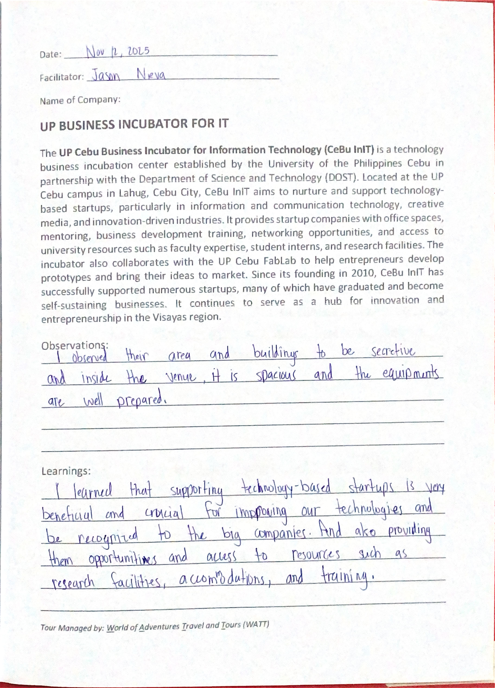
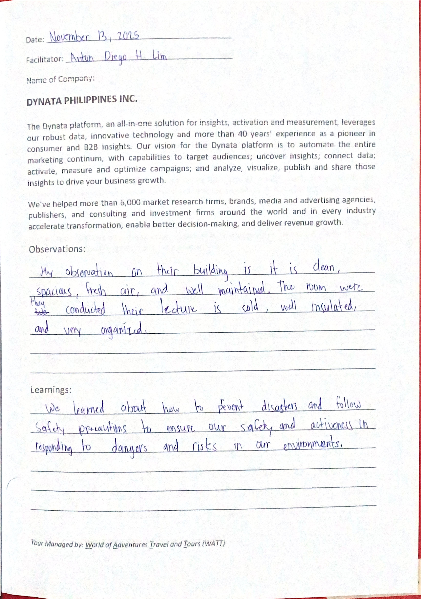

The Educational Tour in Cebu and Bohol (November 12–15, 2025) was an incredible journey that exposed me to real-world IT innovation, entrepreneurship, cybersecurity, virtual reality, emergency systems, and data analytics.
Each company visit inspired me to think bigger, work smarter, and value collaboration, preparedness, and continuous learning.
Below are my handwritten reflection notes from each visit, in chronological order, followed by my overall tour feedback.
"The best way to predict the future is to create it." — Peter Drucker

Day 1: UP Cebu Business Incubator for IT (CeBu InIT)
Supporting tech startups with mentorship, resources, and innovation

Day 2: Rivan IT Cebu
Cybersecurity training, professional development, and skill enhancement

Day 2: Dynata Philippines, Inc.
Marketing insights, data automation, and workplace safety

Day 3: Mata Technologies, Inc.
Virtual reality applications in tourism and real estate

Day 4: T.A.R.S.I.E.R. 117 (Bohol)
Emergency response, disaster management, and public safety

Overall Tour Experience
Excellent organization, accommodations, meals, and learning opportunities